Open to roles in strategy, climate finance and policy research
Pout Chop Jal
Founder of Carbon Clarity, policy researcher and Mastercard Foundation Scholar
I turn field research and policy gaps into ventures and tools that move climate finance and mobility forward across Africa.
- 2competition wins in 2026, with IOM Mozambique and Ashesi × Microsoft
- 54African countries in the visa policy matrix I audited
- 2,770cookstove households in our Mozambique carbon plan
About
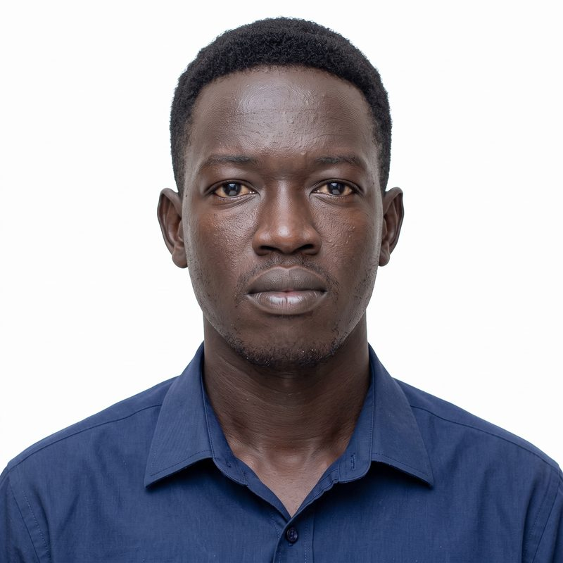
I work where commercial strategy, climate technology and regulation meet, mostly in markets that global finance still underserves.
I grew up in South Sudan and studied Business Administration at Ashesi University in Ghana as a Mastercard Foundation Scholar. In November 2025 I founded Carbon Clarity to make carbon markets more transparent for the communities whose projects generate the credits. I also work as a technical assistant with the Nkabom Collaborative at Ashesi and as market manager for Yamalé, an African legal-tech platform.
My work moves between field interviews and spreadsheets, policy briefs and product prototypes. I have built compliance and risk models, aligned partners such as Global Affairs Canada, Catalyste+ and Microsoft, and led data projects from first question to finished tool.
- Based in
- Accra, Ghana
- Education
- BSc Business Administration, Ashesi University
- Focus
- Climate finance, policy research, valuation
- Languages
- English, Arabic, Nuer
Selected work
Seven projects across three areas. Each is colored by area so you can follow a thread through the page.
-
>80%of Ghana's fish processors still use a 1969 kiln
Cleaner fish smoking in James Town
Most of Ghana's fish is smoked by women over open wood fires. Carbon finance could pay for cleaner stoves, but there is no trusted field data to prove the savings, and carbon income rarely reaches the women. This Carbon Clarity project, part of Nkabom Research Projects at Ashesi, sets out to change both.
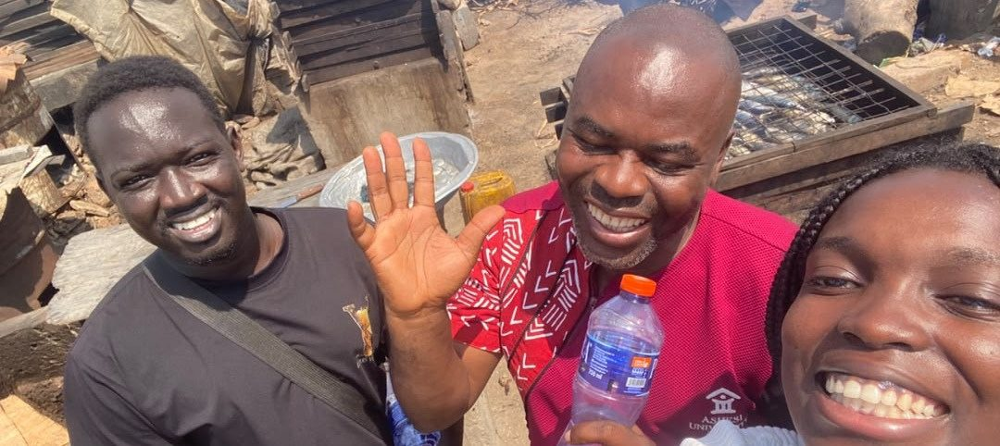
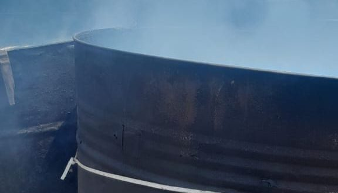
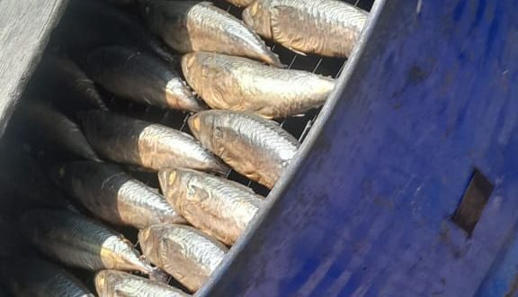
- Phase 1, under way: finished baseline fieldwork on kilns, fuel, smoke and costs in October 2026. A working paper and a side-by-side study of the traditional kiln against an improved stove come next.
- Phase 2: refine the stove with the women who use it and fit IoT sensors that collect fuel data to carbon-audit standard.
- Phase 3: turn verified savings into carbon credits and pay the income to the women by mobile money.
-
2,770displaced households in the Mozambique plan
Carbon Clarity
A venture connecting rural and displaced communities in Africa to international carbon markets, with digital measurement, reporting and verification (dMRV) that people without formal education can follow.
- Wrote the strategy to bring 2,770 displaced households in Mozambique into the carbon credit value chain, with a three-phase roadmap.
- Designed the "Inflation Shield", a visual-first floor price of $17 to $21 per credit that builds trust and carbon literacy among households.
- Built a revenue model on a $1.50 service fee per credit, reaching operational self-sufficiency by year three.
- Partnered with Catalyste+, under a Global Affairs Canada initiative, to validate MRV models for community-level carbon credits.
-
1stof 8 international teams
Visual Bridge: fair carbon finance for displaced families in Mozambique
In 2024, IOM Mozambique gave improved cookstoves to displaced families, but the carbon credits were never registered and no payments arrived. Our team designed Carbon Clarity, a transparency system that works inside existing carbon projects so families can see what their credits sell for and what they should receive.
- A learning hub that teaches carbon literacy through savings groups (VSLAs), community radio, public price boards and a visual household guide in Emakhuwa, Portuguese and English.
- Accountability tools: itemized picture receipts, elected oversight committees with seats for women, youth and people with disabilities, and complaints resolved within 14 days.
- Tested with 50 household representatives at three sites. Switching to an icon-based price board clearly improved understanding.
- Ranked first of three teams at Demo Day. IOM and Bridge Carbon are now reviewing the concept for IOM's improved cookstoves project.
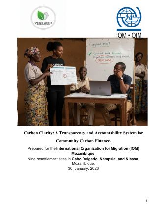
Report for IOM Mozambique24 pages, PDF, Jan 2026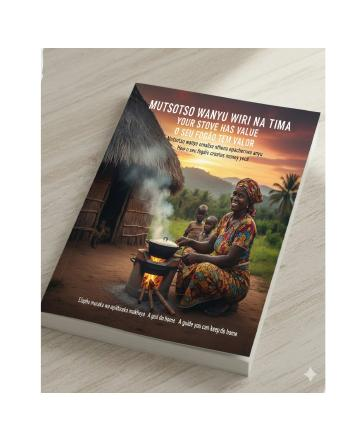
Full final report106 pages, PDF, 10 MB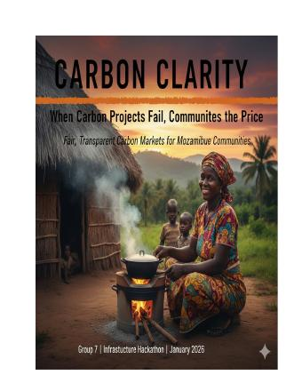
Household guideEmakhuwa, Portuguese, English. 11 pages $97,90018 months
2 sites
500 householdsPhase 1 budgetExcel, with funding and break-even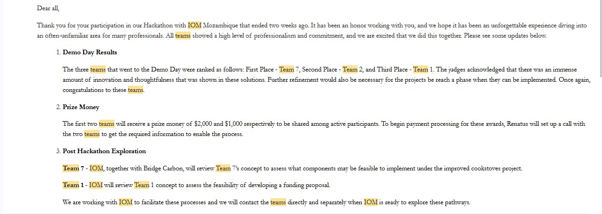
Demo Day resultsAfrican Leadership Academy, 25 Feb 2026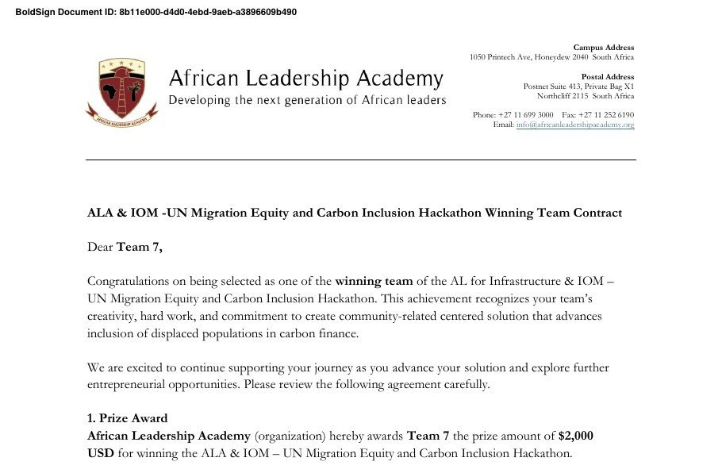
Winning team award$2,000 prize letter, excerpt -
54countries audited
Pan-African visa and mobility matrix
A cross-border policy dataset showing what it costs international students to study and live in another African country.
- Audited and corrected the data for all 54 country profiles in the master policy matrix.
- Found that standard international students pay 150% more in visa costs than East African Community scholars, evidence now used in two policy advocacy proposals.
- Designed a standard visa barrier system across 18 countries that cut student intake assessments by 35%.
- Interviewed international students to document the barriers independent students face.
-
15×the weight our index gives a full trotro over a private car
Accra-Flow: smarter trotro traffic for Accra
Most of Accra's commuters ride trotros and okadas, yet traffic signals treat a full 28-seat minibus like an empty private car. Our team of four built Accra-Flow in the Microsoft × Ashesi Future Builders AI Skilling Program and was named a winner of its case competition.
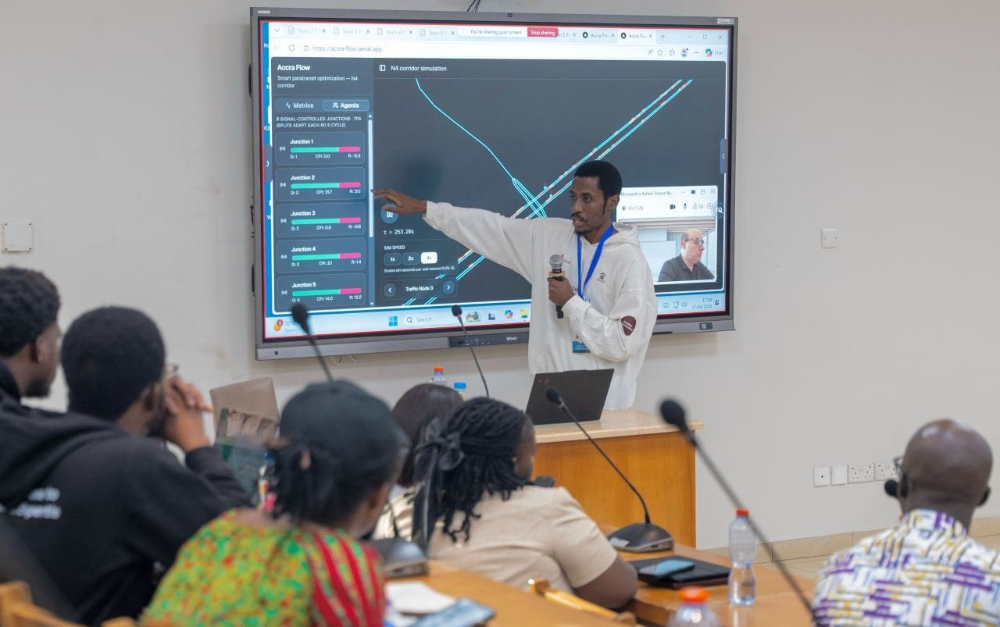
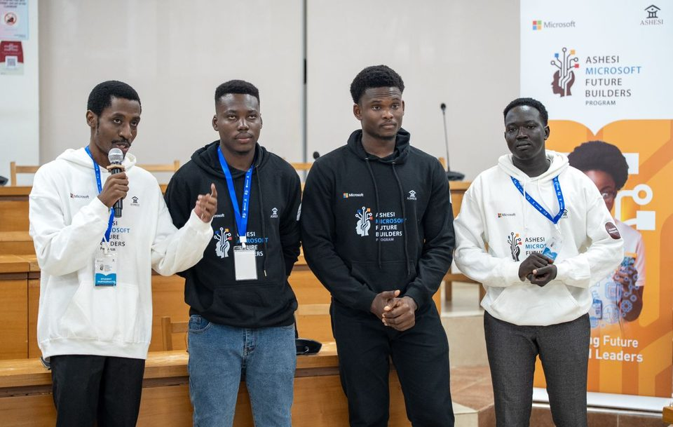
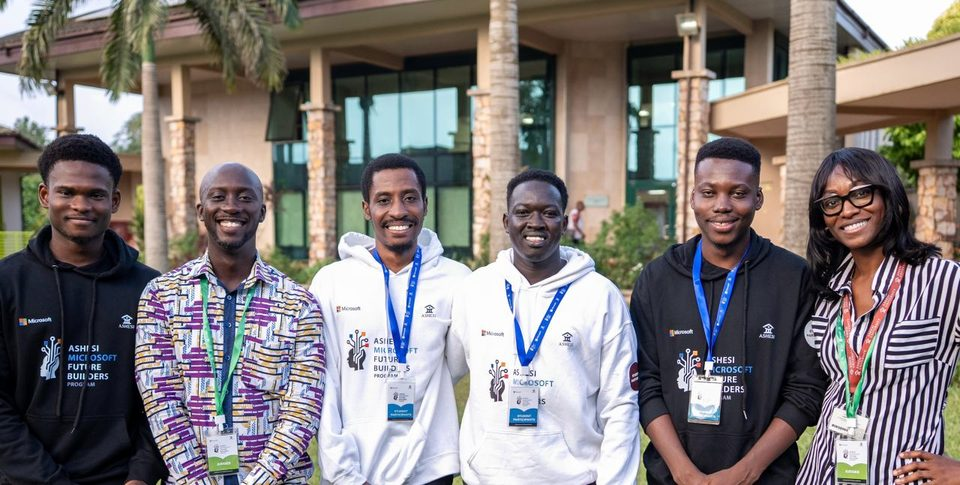
- Started with the Commuter Fluidity Index, which counts people rather than vehicles, so a full trotro is worth about 15 times a private car.
- Grew it into intersections that cooperate as learning agents, fed by roadside cameras that process video on the device so no footage leaves the camera.
- Reached drivers through USSD alerts that work on any phone, with mobile-money fuel rebates for drivers who take part.
- Planned a pilot on the Madina–Tetteh Quarshie N4 corridor, targeting peak journeys at least 20% shorter.
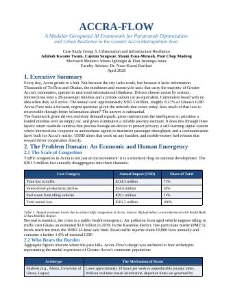
Case study, revised10 pages, PDF, Apr 2026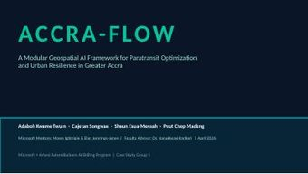
Demo deck12 slides, PDF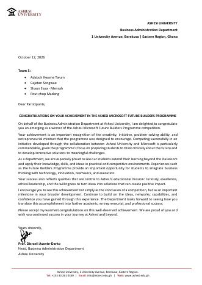
Winner's letterAshesi Business Administration, Oct 2026 6 pagesShorter version of
the case studyCase study, short versionPDF, Apr 2026 LiveN4 corridor
simulationAccra-Flow demoaccra-flow.vercel.app -
ABMagent-based supply chain model
Farmer Delivery Enterprise
A supply chain prototype that connects smallholder farmers directly to buyers, cutting out middlemen and the food spoilage that comes with long chains.
- Modeled the chain agent by agent to test where delays and losses come from.
- Collected spoilage-reduction data to support the business case.
-
5SERVQUAL service dimensions tested
What keeps rural mobile money customers loyal
My capstone thesis on service quality and retention across Ghanaian mobile banking platforms in rural areas.
- Applied the SERVQUAL framework to find the service gaps that drive customers away.
- Recommended specific changes to product design and regional customer service.
What I bring
Each skill below points to where I used it.
Climate finance and carbon markets
dMRV design, credit verification models, linking projects to voluntary carbon markets.
Used in Carbon Clarity, Visual Bridge
Policy and regulatory research
Cross-border policy matrices, compliance risk, comparative briefs for advocacy.
Used in Visa and mobility matrix
Quantitative and field research
Survey design, SERVQUAL, index construction, interviews with operators in the field.
Used in Accra-Flow, capstone, clean cookstove fieldwork
Strategy and valuation
Pricing and revenue models, competitive strategy, market entry and project management.
Used in Farmer Delivery Enterprise, Carbon Clarity
Data products and prototyping
Turning datasets into tools people can use: classification systems, dashboards, interfaces.
Used in Visual Bridge, visa barrier classifier
Partnerships across borders
Aligning funders, governments, universities and companies around one deliverable.
Used with Global Affairs Canada, Catalyste+, Microsoft, IOM
Experience
Work first, then education and research.
Work
-
Now
CurrentTechnical Assistant
Nkabom Collaborative, Office of the Provost, Ashesi University
- Support Nkabom Research Projects, including Carbon Clarity's fish smoking study in James Town.
-
Now
CurrentMarket Manager
Yamalé. Remote
- Lead market work for Yamalé, an AI legal research platform built for the legal systems of 55 African jurisdictions.
-
May 2026 – now
CurrentEntry Evaluation Panelist & Judge
Royal Commonwealth Society, Nordic-Baltic Hub. Part-time, remote
- Judged essays and poetry on the global panel of The Queen's Commonwealth Writing Competition, which drew 53,840 entries from 56 countries.
- Gave feedback to young writers within a shared international grading framework.
-
Apr 2026 – now
CurrentData Specialist and Research Intern
Graduate Guidance Group (G3 Africa). Remote
- Audited and corrected the data for 54 country profiles in a master policy matrix on student mobility and visas.
- Quantified a 150% visa cost gap between standard international students and EAC scholars, used in two policy advocacy proposals.
- Designed a standard visa barrier system for 18 countries, cutting intake assessment time by 35%.
- Interviewed international students about the barriers they face.
-
Feb – Apr 2026
Case Study Researcher
Microsoft × Ashesi Future Builders AI Skilling Program, Accra
- Co-designed Accra-Flow, an AI framework that gives trotro traffic priority at Accra's intersections, starting from the Commuter Fluidity Index.
- Our team won the programme's case competition.
-
Nov 2025 – now
CurrentFounder & CEO
Carbon Clarity, Accra
- Won the IOM Mozambique × AL for Infrastructure hackathon with the Visual Bridge transparency system.
- Designed the "Inflation Shield" pricing and a $1.50-per-credit fee model that reaches self-sufficiency by year three.
- Validated community-level MRV models with Catalyste+ under a Global Affairs Canada initiative.
-
Feb 2025 – now
Virtual Intern
Excelerate, Rochester Institute of Technology. Remote
- Practiced prompt design for AI models, content optimization and campaign execution for business goals.
-
2023
Business Development and Sales Intern
Thematic. Remote
- Researched the music industry and artist profiles and presented the trends.
Education and research
-
2022 – 2026
BSc Business Administration
Ashesi University, Ghana. Mastercard Foundation Scholar
- Corporate finance, competitive strategy, managerial accounting, strategic marketing.
- D-Lab project member, Ashesi Robotics Experience mentor, and tutor on the Berekuso Math Community Project.
-
Aug 2025 – Jun 2026
Capstone: fintech customer loyalty
Department of Business Administration
-
2024 – 2025
Clean energy user research
Fieldwork initiative
- Interviewed artisanal fishery operators on the economics of adopting clean cookstoves.
-
2019
Secondary education, with distinction
Equity High School, Juba, South Sudan
Certifications
- Fundamentals of Agile Project ManagementProject Management Institute, 2026
- Career readiness mentorship (Student English Program)Global Mentorship Initiative, 2026
- AI-Integrated Leadership ProgramAspire Institute with Adobe, 2025
- Enterprise Design Thinking PractitionerIBM, 2023
- Lean Six Sigma White Belt2023
- Virtual Professional Development SeriesThe Leadership Alliance, 2023
- Paragon One CertificateParagon One, 2023
Honors
Awards, credentials and service in 2026.
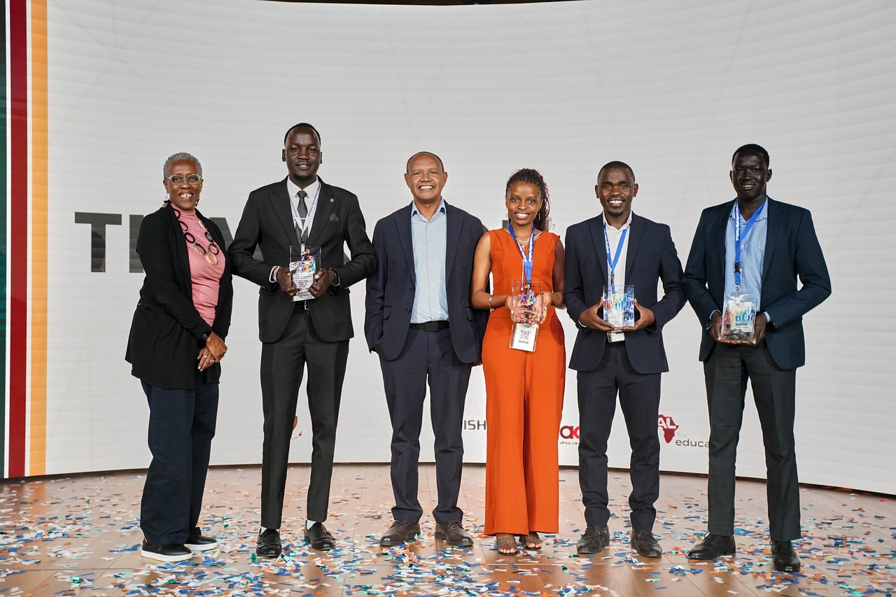
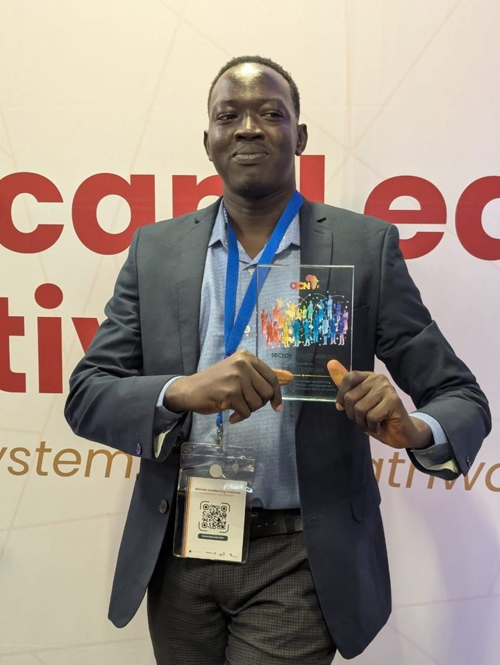
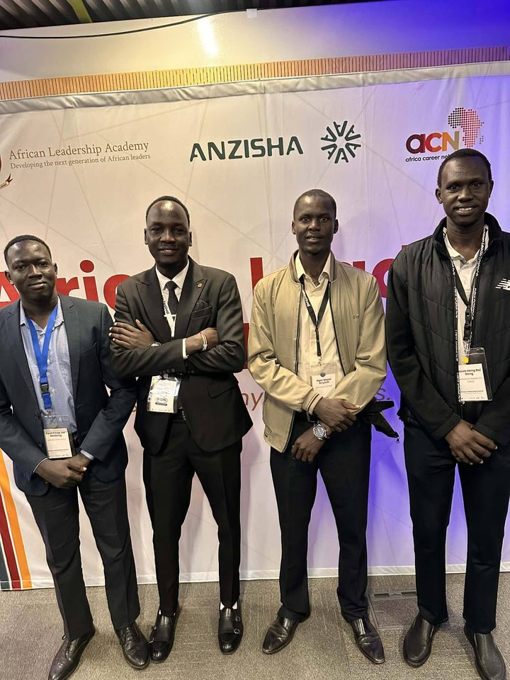
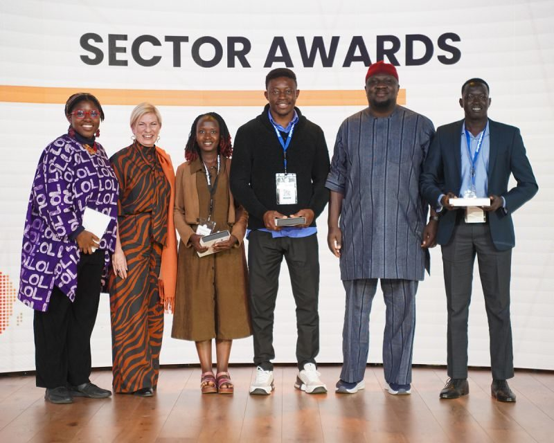
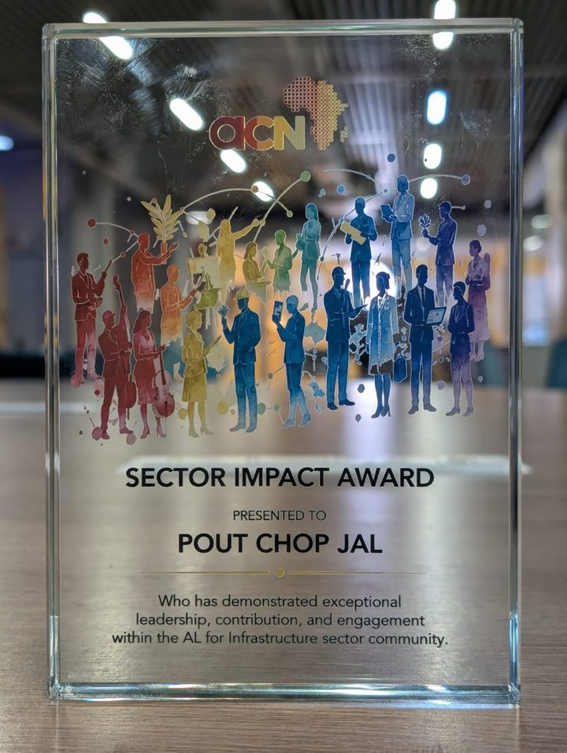
-
Winner, Ashesi Microsoft Future Builders Programme
Ashesi University and Microsoft
My team of four won the case competition with Accra-Flow, an AI framework for Accra's trotro traffic. The Business Administration Department formally recognized the team for creativity, problem-solving and execution. See the documents
With teammates and judges at Ashesi University -
Sector Impact Award, AL for Infrastructure
Africa Career Networks, African Leadership Festival, Johannesburg
One of six sector winners at the inaugural festival, recognized on stage before more than 300 African leaders for leadership, contribution and engagement in the AL for Infrastructure community.
-
Career readiness mentorship
Global Mentorship Initiative
Completed GMI's career readiness mentorship, through Ashesi Career Services, mentored by Gamunu (George) Jayasinghe. View certificate
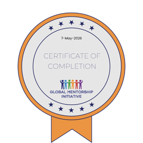
-
First place, ALA & IOM UN Migration Equity and Carbon Inclusion Hackathon
African Leadership Academy, AL for Infrastructure and IOM Mozambique
Team 7 won first place and the $2,000 prize for Carbon Clarity's Visual Bridge transparency system. See the documents
-
Judge, The Queen's Commonwealth Writing Competition
Royal Commonwealth Society
Judged entries in a record year of 53,840 submissions from all 56 Commonwealth countries, and received the Society's certificate of appreciation. View certificate
-
Member
Fly for Peace
Children's Global Peace Movement
Welcomed into a global movement that brings children and young people together through friendship and cultural exchange.
What people say
Pout's analytical skills are truly impressive. He quickly grasps complex business challenges and proposes well-researched, practical solutions. He is a valuable asset to any team.
Over the past year, I've had the pleasure of mentoring Pout. His passion for structured problem-solving, stakeholder communication, and venture design is exceptional.
Working with Pout in sustainability and climate finance was a remarkable experience. He grasps multi-layered system dynamics quickly and converts them into viable initiatives.
Let's work together
I'm looking for roles in corporate strategy, climate finance and policy research, and I'm glad to talk about partnerships on carbon market transparency.
- Emailpoutchopj@gmail.com
- LinkedInlinkedin.com/in/pout-chop-jal
- Phone+233 59 430 3507
- LocationAccra, Ghana (GMT)